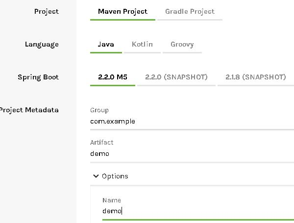
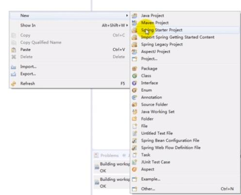

1.创建maven项目
2.pom.xml添加如下内容：
<!--1.指定依赖都由springboot管理-->
<parent>
<groupId>org.springframework.boot</groupId>
<artifactId>spring-boot-starter-parent</artifactId>
<version>1.5.2.RELEASE</version>
</parent>
<!-- 。。。 -->
<dependencies>
<!--2.添加需要用到的依赖-->
<dependency>
<groupId>org.springframework.boot</groupId>
<artifactId>spring-boot-starter</artifactId>
</dependency>
</dependencies>3.创建springboot项目启动类：
@SpringBootApplication
public class MyApplication {
public static void main(String[] args) {
SpringApplication app = new SpringApplication(MyApplication.class);
app.run(args);
}
}1.进入spring官网下载springboot项目包：http://https://start.spring.io/
2.选择需要的配置后下载：

3.下载后解压，在编译器里导入maven项目即可
1.下载并安装spring tool suit ：https://spring.io/tools3/sts/all （sts是一个定制版的Eclipse，专为Spring开发定制的，方便创建调试运行维护Spring应用。
2.选择配置并创建项目：
